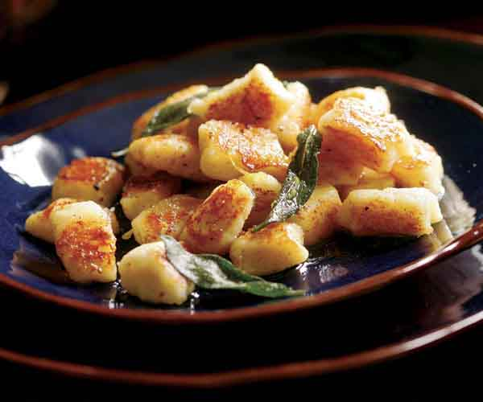

Browned Butter and Sage Gnocchi

Olive Garden may have zuppa toscana, but they wish they had this.
Decadent browned butter sauce and pillowy gnocchi combine with the subtle taste of sage for a perfect winter lunch.
Ingredients
- 3/4 tsp salt
- Potato Gnocchi
- 3tbs Unsalted Butter
- 18 Fresh Sage Leaves
- 1tsp Finely Grated Lemon Zest
- Freshly ground black pepper
Process
- Bring a large pot of well-salted water to a boil over high heat. Add about one-third of the gnocchi. To get the gnocchi into the boiling water, fold the parchment ends to form a chute and gently shake the gnocchi out, taking care not to clump them together as you drop them in.
- Give one gentle stir, wait until the gnocchi all float to the surface of the water, and then cook them for 1 minute.
- Meanwhile, heat 1 Tbs. of the butter in a 12-inch nonstick skillet over medium-high heat. When the butter is completely melted, use a large slotted spoon or a strainer to transfer the cooked gnocchi from the boiling water to the skillet, shaking off as much water as possible first.
- Sprinkle with 1/4 tsp. salt and cook, shaking the pan occasionally to turn the gnocchi, until they’re lightly browned, about 2 minutes. Transfer to a large plate. Repeat with the remaining gnocchi.
- Wipe the skillet clean if necessary. Put it over medium-high heat and add the butter. When the butter has almost completely melted, stir in the sage leaves. Cook, stirring occasionally, until the butter turns a light brown color (be careful not to let it burn) and the sage leaves darken and crisp up slightly, 2 to 3 minutes. Remove from the heat.
- Add the reserved gnocchi and the lemon zest to the pan and toss to coat well. Season to taste with salt and pepper. Serve immediately.
Back to Index